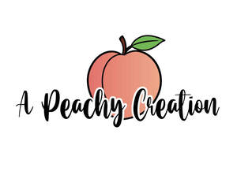

Trade Mark Journal No.2025/047 21 November 2025
UK00004292735 11 November 2025 (9,16,21,25)

- Class 9
- Mouse mats; Mats for use with a computer mouse; Mouse pads; Pads (Mouse -); Computer mouse pads; Mouse pads [computer peripheral]; Computer mouse; Mouse [computer peripheral]; Computer mouses; Mousepads; Computer mousepads.
- Class 16
- Greeting cards; Wall decals; Stickers; Adhesive wall decorations of paper; Wall decorations of paper; Wall calendars; Bumper stickers; Decorative stickers for helmets; Adhesive stickers; Wall maps; Stickers [stationery]; Decorative stickers for cars; Wall charts; Stickers [decalcomanias]; Floor decals; Car stickers; Decals; Vehicle bumper stickers; Wall planners; Albums for stickers; 3D wall art made of paper; Illustrated wall maps; 3D wall art made of card; Sticker books; Greetings cards; Musical greeting cards; Cards; Pop-up greetings cards; Musical greetings cards; Invitation cards; Paper boxes for storing greeting cards; Gift cards; Holiday cards; Birthday cards; Christmas cards; Printed cards; Announcement cards [stationery]; Occasion cards; Index cards [stationery]; Blank cards; Correspondence cards; Note cards; Visiting cards; Picture cards; Paper loyalty cards; Announcement cards; Name cards; Business cards; Anniversary cards; Trading cards; Collectable cards; Flash cards; Motivational cards; Reference cards; Gift wrap cards; Blank note cards; Printed mail response cards; Index cards; Baseball cards; Post cards; Menu cards; Printed informational cards; Filing cards; File cards; Scoring cards; Printed recipe cards; Trivia cards; Social note cards; Blister cards; Record cards; Printed greeting cards with electronic information stored therein; Collectable trading cards; Dinner mats of card; Place cards; Tags for index cards; Pens; Ballpoint pens; Ball-point pens; Felt-tip pens; Ink for pens; Ink pens; Steel pens [styluses or stencil pens]; Rollerball pens; Refills for ballpoint pens; Inkless pens; Fountain pens; Stands for pens and pencils; Marker pens; Highlighter pens; Balls for ball-point pens; Tips for ballpoint pens; Ink for fountain pens; Boxes for pens; Coloured pens; Brush pens; Colouring pens; Drawing pens; Marking pens; Pens for marking; Ink cartridges for pens; Marking pens [stationery]; Pen nibs; Ink cartridges for fountain pens; Ballpoint pen refills; Colour pens; Steel pens; Ball pens; India ink pens; Cases for pens; Pen trays; Stands for pens; Ball-point pen and pencil sets; Highlighting pens; Pen refills; Fiber-tip pens; Etching pens; Fibertip pens; Correction pens; Pen and pencil boxes; Pen ink refills; Felt pens; Stylographic pens; Glitter pens for stationery purposes; Glue pens for stationery purposes; Pen boxes; Fibre-tip pens; Pen and pencil holders; Pen or pencil holders; Skin marker pens; Pen cartridges; Film pens; Gel roller pens; Marking pen refills; Fountain pen ink cartridges; Pen ink cartridges; Artists' pens; Pen holders; Pen and pencil cases; Felt writing pens; Porous tip pens; Felt marking pens; Pen calligraphy copybooks; Pen clips; Stands for pen and pencil; Felt tip pens; Ink pen refill cartridges; Roller ball pens; Pencils; Pen sets; Pencils with erasers; Ball point pens; Pen cases; Pens [office requisites]; Ink erasers; Pens of precious metal; Notepads; Pen stands; Pen wipers; Pencil erasers; Pocket pen shields; Retractable pencils; Pencil trays; Ink pads; Pencil ornaments [stationery]; Pencil ornaments (stationery); Ballpoint refill cartridges; Pencil eraser refills; Coloured pencils; Cartridges (Ink -) for writing instruments; Holders for notepads; Ink pads for seals; Inkwells; Nibs for writing instruments; Pencil cups; Pencil boxes; Pads [stationery]; Nibs; Colouring pencils; Pencils for colouring; Pencil sharpeners; Sharpeners (Pencil -); Pen rests; Scribble pads; Drawing pencils; Ink for writing instruments; Scribbling pads; Sharpeners for cosmetic pencils; Ink sticks; Propelling pencil refills; Inks for pads; Pencil holders; Decorations for pencils; Ink stamps; Nibs of gold for writing instruments; Attachments for pencils; Charcoal pencils; Writing paper pads; Holders for notebooks; Pencil lead refills.
- Class 21
- Mugs; Cups and mugs; Coffee mugs; Ceramic mugs; Earthenware mugs; Porcelain mugs; Mugs of porcelain; Beer mugs; China mugs; Glass mugs; Mugs of china; Insulated mugs; Travel mugs; Mug cosies; Mugs made of earthenware; Mugs made of porcelain; Mug racks; Drinking mugs made of porcelain; Mugs made of china; Vacuum mugs; Mugs made of plastic; Mug sleeves; Mugs made of ceramic materials; Mugs of precious metal; Drinkware; Mug trees; Teapots; Teacups (yunomi); Teacups [yunomi]; Coffee cups; Tankards; Coffee pots; Coasters (tableware); Mugs made of fine bone china; Porcelain coasters; Tea cups; Mugs, not of precious metal; Pint tankards; Coffee stirrers; Tumblers for use as drinking glasses; Carafes; Glass cups; Pewter tankards; Cups; Tumblers; Commemorative statuary cups of porcelain, ceramic, earthenware, terra-cotta or glass; Tea pots; Cups made of earthenware; Cups made of pottery; Demitasse sets comprised of cups and saucers; Figurines [statuettes] of porcelain, ceramic, earthenware or glass; Prize cups of porcelain, ceramic, earthenware, terra-cotta or glass; Figurines of porcelain, ceramic, earthenware, terra-cotta or glass for cakes; Goblets; Saucepans (Earthenware -); Earthenware saucepans; Glass carafes; Holders for tumblers; Insulated bottles [flasks]; Figurines of earthenware; Glass pots; Ceramic figurines; Trivets; Beer steins; Glasses, drinking vessels and barware; Souvenir plates; Ceramic tableware; Steins; Pint glasses; Coffee pots [non-electric]; Non-electric coffee pots; Pewter goblets; Tumblers [drinking vessels]; Cups made of china; Beer jugs; Tea canisters; Tea cosies; Cosies (Tea -); Statuettes of porcelain, ceramic, earthenware or glass; Trivets [table utensils]; Cardboard cups; Beer glasses; Drinking steins; Statues of porcelain, ceramic, earthenware or glass; Statues of porcelain, earthenware, ceramic or glass; Glass bowls; Bowls (Glass -); Figurines of glass; Busts of porcelain, ceramic, earthenware or glass; Liqueur cups; Drinking cups; Plastic cups; Insulated lids for plates and dishes; Figurines of porcelain, ceramic, earthenware, terra-cotta or glass; Glassware; Urns being vases; Beverage glassware; Glass flasks [containers]; Insulating sleeve holder for beverage cups; Japanese-style teapots [kyusu]; Plaques of earthenware; Sippy cups; Tableware of porcelain; Figurines of porcelain; Ceramic ornaments; Decanters; Crockery made of porcelain; Boxes of earthenware; Glass tableware; Coffee services [tableware]; Glass flasks; Coffee services of ceramic; Biodegradable cups; Glass decanters; Tableware, cookware and containers; Compostable cups.
- Class 25
- T-shirts; Tee-shirts; Shirts; Short-sleeved T-shirts; Printed t-shirts; Sweatshirts; Long-sleeved shirts; Short-sleeved shirts; Turtleneck shirts; Short-sleeve shirts; Open-necked shirts; Camouflage shirts; Aloha shirts; Yoga shirts; Corduroy shirts; Hoodies; Knit shirts; Sweat shirts; Sports shirts; Dress shirts; Soccer shirts; Casual shirts; Football shirts; Woven shirts; Shirts for suits; Maternity shirts; Collared shirts; Polo shirts; Wristbands [clothing]; Shirts and slips; Golf shirts; Jerseys [clothing]; Tennis shirts; Pique shirts; Tank-tops; Sport shirts; Moisture-wicking sports shirts; Button-front aloha shirts; Mock turtleneck shirts; Hooded sweat shirts; Fishing shirts; Sleep shirts; Shorts [clothing]; Night shirts; Rugby shirts; Bandanas; Hunting shirts; Ramie shirts; Under shirts; Sports shirts with short sleeves; Headbands [clothing]; Headbands for clothing; Sleeveless jerseys; Jackets (Stuff -) [clothing]; Stuff jackets [clothing]; Bandanas [neckerchiefs]; Hooded sweatshirts; Paper hats for use as clothing items; Bandannas; Hats (Paper -) [clothing]; Paper hats [clothing]; Aprons [clothing]; Padded shirts for athletic use; Jackets [clothing]; Embroidered clothing; American football shirts; Jerseys; V-neck sweaters; Shirt fronts; Sweaters; Sleeved jackets; Wristbands; Beanies; Party hats [clothing]; Undershirts; Bib shorts; Kerchiefs [clothing]; Denims [clothing]; Beanie hats; Shirt yokes; Yokes (Shirt -); Jackets being sports clothing; Tops [clothing]; Playsuits [clothing]; Sleeveless jackets; Fleece shorts; Quilted jackets [clothing]; Collars [clothing]; Sweatpants; Button down shirts; Tracksuits; Stuff jackets; Denim jackets; Shorts; Scarves; Hats; Jeans; Bottoms [clothing]; Headbands; Visors [clothing]; Sweatbands; Polo sweaters; Capes (clothing); Turtleneck sweaters; Foulards [clothing articles]; Sleeveless pullovers; Gloves for apparel; Bibs, sleeved, not of paper; Boy shorts [underwear]; Clothing for wear in wrestling games; Nappy pants [clothing]; Trousers shorts; Mitts [clothing]; Babies' pants [clothing]; Knitted clothing; Layettes [clothing]; Clothing layettes; Sweatsuits.
A Peachy Creation Ltd